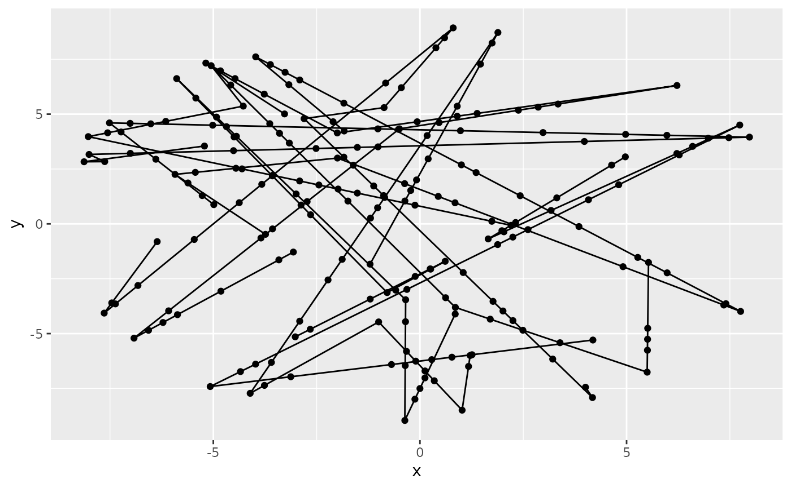

Simplify trajectory
simplify_trajectory.RdTo save space we can simplify the trajectory data. Trajectories usually have very fine timeline, because small time steps allows to (1) minimize potential collision artifacts, (2) allow smooth directional changes like in `step_vonmises`. When simplifying, we go through time points and detect for which timepoints we can interpolate all object positions. We keep these positions and remove the rest. The resulting trajectory has irregular timeline. If `snapshot`, then for each timepoint positions of all objects are included (i.e., also positions for these, which could be interpolated for a given timepoint). If `snapshot == FALSE`, then only the data for changing points are included.
Value
Subset of the original data. The timeline is irregular, the positions which could be interpolated are omitted.
Examples
library(ggplot2)
sett_move <-
new_settings(
speed = 5, xlim = c(-9, 9), ylim = c(-9, 9),
bounce_off_square = FALSE,
bounce_off_circle = TRUE, circle_bounce_jitter = pi / 6
)
moment <- position8c %>% add_random_direction()
tt1 <- make_random_trajectory(
moment, seq(0, 8, by = 0.1), sett_move, step_direct)
tt2 <- simplify_trajectory(tt1, snapshot = TRUE)
tt3 <- simplify_trajectory(tt1, snapshot = FALSE)
ggplot(tt1, aes(x = x, y = y, group = object)) +
geom_path() +
geom_point(data = tt2)

# number of lines reduced down to:
nrow(tt2) / nrow(tt1)
#> [1] 0.3333333
nrow(tt3) / nrow(tt1)
#> [1] 0.08024691